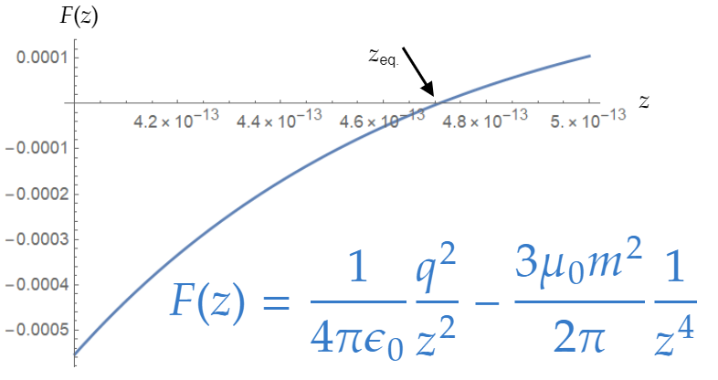

Imagine two charged magnetic dipoles (charge $q $, dipole moment $\mathbf{m} $), constrained to move on the $z- $axis (same as Problem 6.42a, but without gravity).
Electrically they repel, but magnetically (if both $\mathbf{m} $'s point in the $z $ direction) they attract.
(a) Find the equilibrium separation distance.
(b) What is the equilibrium separation for two electrons in this orientation (Answer: $4.72\times 10^{-13} $ m).
(c) Does there exist, then, a stable bound state of two electrons?
The electric force is
\[\mathbf{F}_{\text{electric} }=\frac{1}{4\pi \epsilon _0 }\frac{q^2 }{z^2 }\hat{\mathbf{z}} \]While the magnetic force is
\begin{align*} \mathbf{F} &= \nabla (\mathbf{m}\cdot \mathbf{B})\tag{Eq. 6.3} \\ &= -\frac{3}{2}\frac{\mu _0 m^2 }{\pi }\frac{1}{z^4 }\hat{\mathbf{z}} \tag{See Eq. 5.88} \end{align*}Equilibrium happens when these forces add up to zero:
\[\frac{1}{4\pi \epsilon _0 }\frac{q^2 }{z^2 }-\frac{3}{2}\frac{\mu _0 m^2 }{\pi }\frac{1}{z^4 }=0 \]Solve for $z $, and find:
\[z_{\text{eq.} }=\frac{m\sqrt{6\epsilon _0 \mu _0 }}{q} \]To evaluate this, it's useful to use the relation between $c $ (the speed of light) and $\epsilon _0 $ and $\mu _0 $:
\[\frac{1}{c}=\sqrt{\epsilon _0 \mu _0 } \]A quantity that's more familiar to us. We recall the values:
\begin{align*} q &= 1.6\times 10^{-19}\;\text{C} \\ c &= 3\times 10^8 \;\text{m} \\ m &= 9.22\times 10^{-24}\;\text{A} \cdot \text{m} ^2 \end{align*}We get:
\[z_{\text{eq.} }=4.70506\times 10^{-13}\;\text{m} \]No. Although we have an equilibrium, it is not a stable one.
Where, besides the values used in part (b), it is relevant to recall:
\begin{align*} \epsilon _0 &= 8.854187\times 10^{-12}\;\frac{\text{F} }{\text{m} } \\ \mu _0 &= 1.256637\times 10^{-6}\;\frac{\text{N} }{\text{A} ^{2} } \end{align*}